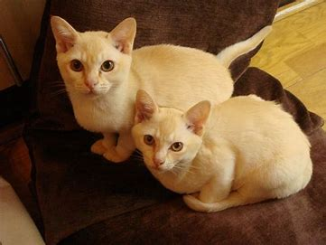
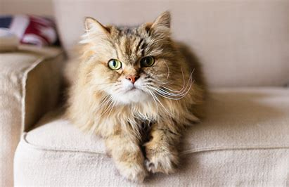
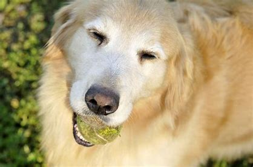
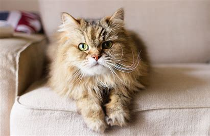
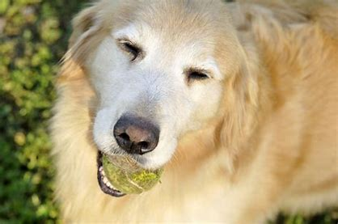
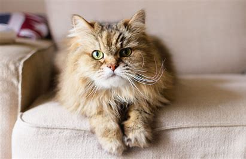
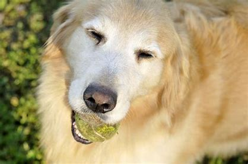

Our Story
The Wisconsin Animal Rescue Foundation has been helping abused, neglected, stray, and unwanted animals since 1999. Our mission has always been to do all that we can to ensure a better existence for any animal in need, and we abide by it to this day. Our founder, Sam Jeffers, has always had a passion for caring for animals, so they purchased an unused building in January of 1999 and converted it nearly single-handedly into the vibrant shelter it is today.
| Hours | ||||||
|---|---|---|---|---|---|---|
| Monday | Tuesday | Wednesday | Thursday | Friday | Saturday | Sunday |
| 7 am - 8 pm | 7 am - 8 pm | 7 am - 8 pm | 7 am - 8 pm | 7 am - 10 pm | 7 am - 10 pm | 7 am - 4 pm |

 




